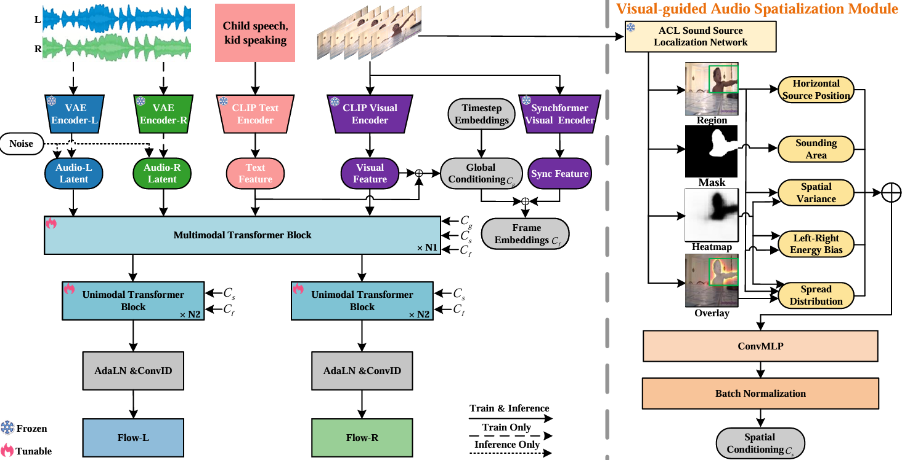

While video-to-audio generation has achieved remarkable progress in semantic and temporal alignment, most existing studies focus solely on these aspects, paying limited attention to the spatial perception and immersive quality of the synthesized audio. This limitation stems largely from current models reliance on mono audio datasets, which lack the binaural spatial information needed to learn visual-to-spatial audio mappings.
To address this gap, we introduce two key contributions: we construct BinauralVGGSound, the first large-scale video-binaural audio dataset designed to support spatially aware video-to-audio generation; and we propose an end-to-end spatial audio generation framework guided by visual cues, which explicitly models spatial features. Our framework incorporates a visual-guided audio spatialization module that ensures the generated audio exhibits realistic spatial attributes and layered spatial depth while maintaining semantic and temporal alignment.

video/ for samples…@misc{wang2026spatialv2avisualguidedhighfidelityspatial,
title={SpatialV2A: Visual-Guided High-fidelity Spatial Audio Generation},
author={Yanan Wang and Linjie Ren and Zihao Li and Junyi Wang and Tian Gan},
year={2026},
eprint={2601.15017},
archivePrefix={arXiv},
primaryClass={cs.CV},
url={https://arxiv.org/abs/2601.15017},
}